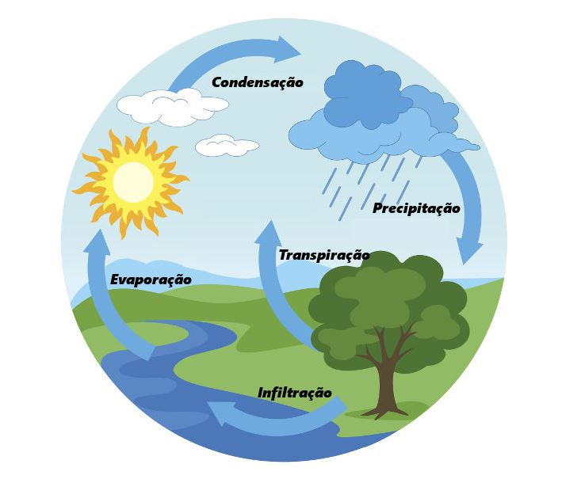

O que é o ciclo da água?
Sabe, a água é como uma super-heroína da natureza! Ela vive passando por diferentes formas: líquida, sólida (como gelo) e gasosa (como vapor). Isso é chamado de 'ciclo da água' ou 'ciclo hidrológico'.
Esse ciclo acontece por causa de alguns processos mágicos da natureza. A água vira vapor quando fica bem quentinha, depois se junta e vira nuvem, e quando as nuvens ficam pesadas, a água cai de volta para a Terra, isso é a chuva. A água também some no chão, vai para os rios e lagos, e até vai para dentro da terra. E as plantinhas também usam um pouco dessa água para crescer!
A água está por toda parte, nos rios, mares, nos lugares secretos debaixo da terra e até nas geleiras das montanhas. Esse ciclo é muito importante porque ajuda a manter a vida na Terra. Ele também decide como fica o tempo e o nível da água nos rios e oceanos. A água é mesmo incrível e essencial para todos nós!
Ciclo da Água na Natureza
O ciclo da água é composto de cinco etapas:
Evaporação
Sabe o sol, que nos dá calor? Ele é como um gigante que aquece a água dos rios, lagos, mares e oceanos. Quando a água fica quentinha, acontece uma coisa mágica chamada 'evaporação'.
A evaporação é quando a água, que está líquida, vira uma coisinha invisível que a gente chama de vapor. Ela sobe para o céu e fica lá na atmosfera. É como se a água estivesse brincando de se esconder nas nuvens!
Condensação
Sabe quando o vapor de água está lá no céu, nas nuvens? Ele começa a esfriar e se juntar, como amigos brincando de se abraçar. Isso é o que chamamos de 'condensação'.
Na condensação, o vapor de água que estava no ar se transforma de novo em água, mas agora em gotinhas. Essas gotinhas se juntam e formam as nuvens no céu. É como se as nuvens fossem feitas de milhões de gotinhas de água brincando juntas lá em cima
Precipitação
Quando as nuvens ficam cheias de gotinhas de água, elas ficam pesadas e começam a cair para o chão. Isso é o que chamamos de 'precipitação'.
A maioria das vezes, as gotinhas viram chuva quando caem. Mas, em lugares muito, muito frios, a água fica tão geladinha que, quando cai, vira gelo rapidinho. Pode ser neve, que é como bolinhas fofas de gelo, ou granizo, que são pedrinhas de gelo maiores. É por isso que, às vezes, a gente vê neve ou granizo em lugares bem gelados!
Infiltração
Quando a água das nuvens cai no chão, uma parte dela entra na terra, como se fosse um mergulho na terra! Isso se chama 'infiltração'.
A água que entra na terra vai lá para baixo, bem fundo, e ajuda a encher os lugares chamados 'lençóis subterrâneos'. Essa água debaixo da terra é como uma reserva mágica que a gente pode usar para muitas coisas, como beber água ou deixar as plantas felizes!
Transpiração
A água que entra no chão também é bebida pelas plantas, como se fosse um suquinho natural! As plantas usam essa água e depois soltam ela de volta para o céu. Isso é o que chamamos de 'transpiração' das plantas.
Além disso, a água pode fazer outras coisas. Ela pode evaporar, subindo para o céu, ou deslizar pelo chão e formar rios. Esses rios vão para o mar, e lá, a água começa tudo de novo, subindo para o céu e virando nuvens. É um ciclo mágico da água que nunca para de acontecer!